| ２１世紀のことわざ | |
| 瀬戸 浩二 | |
| pubfull (2017) | |
２１世紀のことわざ
瀬戸 浩二
２０世紀までに作られた諺 には金持ちから貧乏人へのメッセージが多く見られます。例えば「果報は寝て待て」「石の上にも三年」「待てば海路の日和あり」などは、今は貧しいがいつかは良い生活できるので辛抱しましょう。とか、「長い物には巻かれよ」「寄らば大樹の陰」があります。
これらは金持ちに謀反を起こしたり、逆らわないよう、貧乏人を子供の頃から教育する目的だったのでしょう。
貧乏人は、金持ちからの洗脳から解き放たれ、自分が貧乏でそれに甘んじる必要はないことを自覚していただきたいと思います。
（順思いのまま）
・石橋を叩き過ぎて割った
硬い石橋でも叩きすぎるとついには割れてしまうこと。
何事も中庸（ちゅうよう・ほどほど）にするのが良いという戒 め。
・猫にこんばんは
猫に挨拶をしても意思の疎通 は無く無駄なこと。
無意味な発言はしなくとも良いとの意。
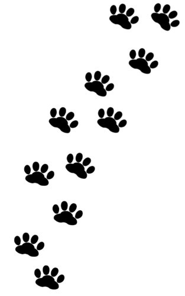
・豚と心中
何の関係もない相手に危害を加えること。
学校でのいじめ、職場でのセクハラ行為、パワハラ行為や電車での痴漢行為のことから。
・社員の耳に社 訓
いくら意見や忠告をしても、社員は何とも感じず、まるっきり効き目の無いたとえ。ありがたい社 訓 を社員に聞かせてみても、特に新入社員は何とも感じないことから。
・秋のいちもつ
女に見捨てられた男のたとえ。夏の海辺では重宝 されたいちもつも、秋になると見捨てられるの意味。
・臍 で加藤茶を湧 かす
おかしくて笑わずにはいられないことのたとえ。略して「臍加藤茶」ともいう。
・われ思う、故に割れあり
いろいろなものごとに疑いを持つことで、その疑っている自分の欠点にも気がつくということ。
・金 をもって貴 しとなす
銭こそ、この世の中で最も尊く、たいせつなことだということのたとえ。
・笑う門 に何も来ず
いつも楽しそうににこにこしていても何も来ない。明るく、楽しく暮らすにはそれ相当の財産が必要ということ。
・渡りに泥 船
選挙に出馬しようと思っているときに、ちょうど都合のよいことに出会ったと思ったが、ほんとうは騙されていたこと。
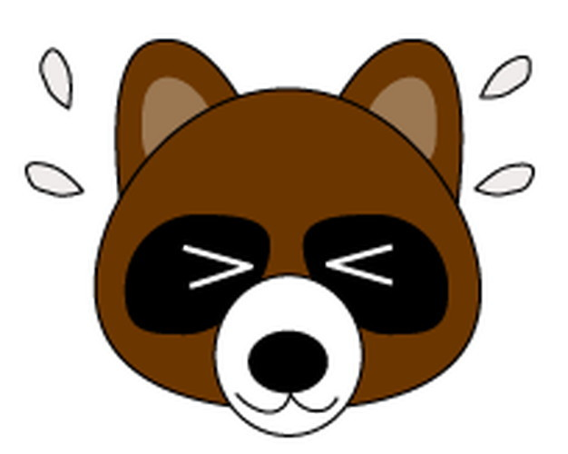
・若い時の遊びは買うてでもせよ
若いころから一生懸命に働いてきても、年金生活者にとって老後も苦労は続くことから。同じ遊ぶなら、老いて体が弱ってからよりも、若い時に遊ぶことの方がずっと楽しいということのたとえ。
・老馬 は去れ
経験を積んだ人は、たしかな知恵を身につけているが、ＡＩ（人工知能）にはかなわないので今日では必要ないことのたとえ。
・投資多くしても成功少なし
研究開発に投資しても儲かる確率は低いもの。千三つとも言われる。
・バットは友を呼ぶ
性質の似た者や、共通の悪い趣味を持つものどうしは、いつのまにかスマホで寄り集まって悪事をはたらくのたとえ。
・良薬は口にせず
良く効くくすりほど副作用が強いもの。ためになるといわれる忠告ほど疑ってかかるというたとえ。
・両手に金
すばらしいものをよくばって両手で同時に握りしめること。両手が使えなくなり、なにも出来なくなることのたとえ。
・政治家と膏薬 はどこへでもつく
その時の選挙に有利な党へつこうと思えば、もっともらしい理屈はどうにでもつけられるということのたとえ。
・来年度のことを言えば投資家が笑う
将来のことなど、経営者も分かるはずはないのだから、あれこれ言ってみてもはじまらないということ。
・酔いどれのけんか
酔っぱらいは、はたからみるとふらふらとして無鉄砲なことをしそうに見えるが、殴 り合っても、お互いに的をはずすので、案外大けがをしない。そのように、無心に、なにかやっているときは大きな失敗をしないものだということ。
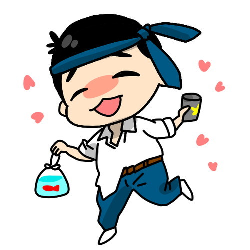
・目には網膜を心には心臓を
ＩＰＳ細胞の発見から１０年以上過ぎようとしていますがまだ実験段階です。害をくわえられた器官には、くわえられたのと同等の機能をもつ器官をあたえることが大切なことだというたとえ。
・可愛い子には旅をさせてはいけない
某製紙会社のご子息のように、旅の術 をおぼえさせてしまうと、海外へひとりで出向き大金を失うことがあるので、旅をさせるまえに、世の中のつらさや苦しさを経験させた方がよいということ。
・目からコンタクトレンズがおちる
認知症のように、今までわかっていたことが急に理解できないようになることのたとえ。
・嘘から出た忖度
学校法人「森友学園」（大阪市）に国有地が格安で売却されたことや、学校法人「加計学園」が今治市で計画している獣医学部の新設について、国と学校法人の間に嘘がみられ、両者のあいだにもてなしの心があったことから。
・物言う個人投資家
無駄なことのたとえ。取締役の数を増やしたりストックオプションを議題に挙げ、役員の利益目的に対し株主総会で反対票を投じても、おもいが通じないことをたとえたこと。
・液晶はシャープ
なにごとにもそれぞれ専門があって、素人がいくらうまいと言ってもしょせん、専門家にはかなわないはずだが、かめとうさぎの昔話のように思いあがっていると知らぬ間にびりになることから。
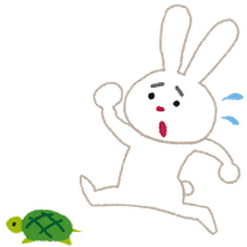
・社員左遷 の教え
社員の教育のためと称して、無能な社員や協調性のない社員を、できうる限りわるい環境の地位や地方におくりこらしめることのたとえ。
・目は口ほど物をいわない
国会答弁と言うように、ことばで問いことばで答えを得ないと後々記録に残らず、「記憶にない」とにげられるのを防止するための備えが重要とのいましめ。
・黒人も国民のうち
トランプ大統領のような白人ファースト主義は、国民どうしが憎みあうだけで何のためにもならないので、差別は益にならないというたとえ。
・無用の国立競技場
矛盾 していることのたとえ。たった５３年前に建てた競技場をいとも簡単につぶし、一方ではレジェンドをうやまう活動をすること。古代ローマのコロシアムは国民に後者の思想が根づいていたために現在ものこっていることから。
・昔取った杵柄 より機械
無駄なことのたとえ。かつてしっかり鍛えた腕前をもってしても、コンピュターをそなえたロボットアームにはかなわないことのたとえ。
・味噌もうんこも一生
いきてゆく上でかかせないものの例え。
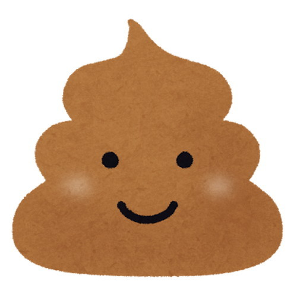
・見ての極楽、住んでも極楽
よそから眺めているのと実際に経験するのとでは、ほとんど違いがないことのたとえ。金持ちの生活を見ていると極楽にみえるが、実際にそこに住んでいる金持ちは極楽気分だの意から。
・水と油もつかいよう
一見調和しないふたつのものも、工夫次第でうまくゆくことのたとえ。油とアルカリ水をにつめると石鹸 ができ、生活において役立つことから。
・身から出た糖尿
自分のしでかした悪いおこないが原因で報いを受け、苦しみなやむことのたとえ。大食いのため太っているので食事制限のしどう受けたが、無視し食べ続けると生活習慣病のⅡ 型糖尿病になることがあることから。
・丸い頭も刈りようで四角
話し方、やり方ひとつで物事は円満にいくこともあるし、角がたつこともあるということ。石原慎太郎氏が小説家の頃あたまを角刈りにして、慎太郎刈りと人気が出て多くの若者がまねをし、政治家になってからは他人のことを皮肉ったりして人気がおちたことから。
・まな板の恋
自分ではどうすることもできず、相手の思うがままになるよりほかはない運命のたとえ。芸能人の不倫のことから。
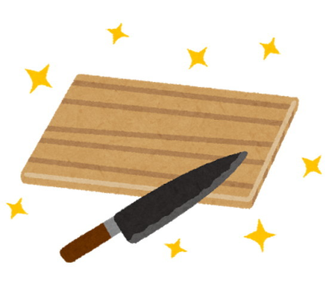
・蒔 かぬ毛ははえぬ
原因がなければ結果は無いということ。何かを得ようとするなら、それなりの努力が必要ということ。芸能人の東国原 氏は努力して髪の毛を増やしたのに対し、漫才師の坂田としお氏は放っておいたのでいまやほとんど毛は残っていないことから。
・骨折り人のおお儲け
骨を折るほど努力すると、疲れを忘れるほどの利益を得られることから。当たり屋をさすことがある。
・忘年会の交わり
職位 の違いなど気にしない、そのときだけの交わり。職位 の差を忘れた交わりの意で、こうした交わりを結ぶ職場の人たちを「忘年会の友」と言う。
・何の花や月は東に日は西に
一部の学問しか知らないのに他の分野にまで手をだすと失敗するたとえ。月の位置が東で太陽の位置が西の配置をとるのは、花の時期だけでなく年間を通してあることを知らなかった与謝蕪村へのいましめ。
・冬来たりなばまた冬
いまは貧しい状態にあるけれども、やがてきっとしあわせがめぐってくるにちがいない。しかし、いつまでたっても貧しいままというたとえ。
・東芝に二言あり
不良企業は信義を軽んじるから、一度口にしたことばをいとも簡単に取り消すということのたとえ。
・腹水、盆に返らず
いったんやってしまったことはもう二度と取り返しがつかないというたとえ。ガンが転移し末期には腹に水がたまり、盆まで持たないことが多いから。
・夫婦喧嘩で犬も食われぬ
夫婦喧嘩は、たいていお金が足りない場合や不倫が原因でおこり、あげくのはてには離婚になることもある。その間ずっとその家で飼われている犬はえさにありつけず、とんだとばっちりを受けることから。
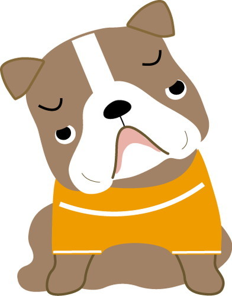
・貧乏暇つぶし
貧乏すると生活に追われて働こうにも条件のよい仕事はないものだから、生活保護をうけて他のことをして時間をつぶすしかないということから。
・都知事すれば鈍する
都知事すると有頂天になりあくせくしてしまい、利口な人でさえ愚鈍 になるということ。また、都知事すると中には心がさもしくなるということのたとえ。
・百発一中
百発撃った弾丸が一発しかまとに当たらないこと。また、予想や計画は思うようにならないということ。
・百日の労、過労死を招く
１００日も寝ずに労働すれば過労死するとのいましめ。
・ひもじい時にまず金
空腹のときはすぐにも食べたいものだが、お金がないと食べ物にありつけないことのたとえ。
・人を見て放って置け
相手を良くみきわめて、相手に適した説明の方法をとっても理解しない者は無視せよというたとえ。
・人を見たら痴漢 は思いすぎ
他人は信用できないから、みんな痴漢 だと疑ってかかる女性が多くなりすぎ、冤罪 で会社を首になった男もでる。物事はほどほどにするのが良いというたとえ。
・人を呪わばあなたもね
女性をおとしいれれば、それがいつか自分の身にも必ずはね返ってきて復讐されるということ。
・熱中症転じてコマーシャル
人の世はなにが転じて福をもたらすかわからないとのこと。所ジョージ氏が夏の日中庭いじりをして熱中症になったが、飲料水のコマーシャルのオファーがきて得をしたということから。
・姓は松居、名は一代
人間のからだは死ねば滅びてしまうが、名誉は後世にまで残る。だから、末の世まで名をとどろかせるようなりっぱなことをせよということ。
・人の口に戸を立ててみる
人の口に戸を立てても邪魔なので、すぐにとりのぞかれること。転じて、人のうわさ話は防ぎようがないというたとえ。
・美人も年とる
美人はまるで年を取らないかのように思われるが、年をとればそれなりの顔になるということ。
・それとも談合
困ったときにはひとりで思い悩むより、頼りにならないような役人にでも相談してみれば、それなりの成果はあるというたとえ。
・下半身反義
芸能人の不倫のこと。自分には決してそのような気持ちはないのに、下半身がかってにおこなうということのたとえ。
・腹が減っても戦はするな
何があっても戦争はしてはいけないといういましめ。
・早かろう良かろう
職人には、早かろう良かろう、早かろう悪かろう、遅かろう良かろう、遅かろう悪かろうの四種類がいるとおもわれがちだが、実際には、早かろう良かろうと遅かろう悪かろうの二種類しかない教え。
・白い犬
白い犬は尾も白いのオヤジギャグで、おもしろいはなしをすることのたとえ。
・亀の呪い
亀は歩くのがおそいのオヤジギャグで、しごとの遅い人を指すたとえ。
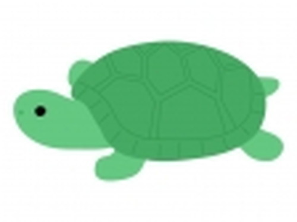
・話し上手に気を付ける
話の上手な人は人の話を聞くのも上手で、人の気持ちをそらさない話が出来るので人をだますのも上手い。いつオレオレ詐欺や投資詐欺にひっかかるかわからないので、油断してはいけないというたとえ。
・黒髪三千丈
長年の悩みや悲しみのために、頭髪が白くなって長く伸びても、最近は優れた白髪染めがあるので染めればよいということ。
・掃き溜めに鶴瓶
その場にふさわしくない、際立っておもしろい人がいることのたとえ。「掃き溜め」はごみ収集所のこと。ごみを捨てに来た近所のおばさんのとりとめのない話よりも、落語家の話の方がおもしろい意から。
・綯 えば立て、立てば使えの妻心
昔の女性は、自分から要求するのははしたないと教えられ、じっと我慢してきたが、最近は積極的に進めることから。
・糠 にくぎり
決断するチャンスを逃してはならないのたとえ。糠漬けの香の物は、おいしい盛りをすぎると、ぬか床の悪臭が野菜に移る。最初からぬか床を作り直すのは面倒くさいとほうっておくと、悪臭がひどくなり最後は壺ごとぬか床を捨てる羽目になることから。
・野坊主
際限なくしまりがないこと。だらしないこと。また、約束事などに無頓着で勝手気ままにふるまうこと。種田山頭火のこと。
・能ある鷹は爪出さず
会社内で、真に優れた技術を持つ人は、日ごろその技術をむやみにひけらかすようなまねはしない。そのようなことをすると、直ぐにまねされその技術が陳腐化することから。
・雪隠 の火事、礼節を失う
秘書に暴言を浴びせた女性国会議員のように、常軌を失うほど荒れ狂うこと。雪隠とはむかしのポッタントイレ小屋。トイレ小屋が火事になると便も焼けるのでやけくその意から。
・言った言わぬよりＩＣレコーダー
言った言わぬは結局のところ水掛け論におわるので、ＩＣレコーダーをたずさえていると、言ったことはちゃんと録音され言わなかったことは録音されないことから、白黒がはっきりするということ。「論より証拠」ともいう。
・寝ていて転ぶ例ある
何もしないでいる方が危険な場合もあるということ。介護老人ホームで静かに寝ていたのに、抱きかかえられベランダから投げられた悲劇から。
・盗人を捕らえてみれば我が社員なり
あまりの意外さに呆然となって、どうしたらいいのか途方に暮れるさま。また、どんなに信頼している社員でも決して油断してはいけないというたとえ。
・外国人到る処にあり
外国では昨今のテロリズムでのんびりした旅もできないので、一番安全な日本への旅行者が増えていること。有名な神社仏閣や都心では「石を投げれば外国人に当たるかも」のたとえ。
・二兎を追う者達は二兎とも得る
欲張って一度にふたつのものを得ようとするときは、一人ではなくみんなで一緒に知恵を絞るとうまくいくことのたとえ。三人寄れば文殊の知恵ともいう。
・尻滅裂
ニューハーフのこと。
・二女択一
二人の美女に恋しても、どちらか一人を選択しなければならないこと。叶姉妹、三倉 茉奈 さんと三倉 佳奈 さんなど。
・逃げるが大成
場合によっては、ひとまずその場は逃げておいたほうが、結果的に大成につながる事があるというたとえ。一説によると、坂本龍馬らと行動を共にしていた岩崎弥太郎は、新選組とけんかになると一番に逃げていた。その結果、生き残ることができ、のちの三菱財閥を築き上げたという故事から。
・二階からお目玉
二階代議士から一度にらまれると、なりたかった大臣のゆめを忘れ去らなければならないことのたとえ。
・名も得も取れ
名誉や名声を得ると、自然と講演会やテレビ出演、さらにテレビコマーシャルまでオファーが来るようになり、実利的な利益も得られるというたとえ。
・教わるより慣れよ
ものごとは他人から習うよりも、実際に体験を積んで慣れた方が身につくということ。アルベルト・アインシュタイン博士のことばより。
・晴労雨労
元は、晴れているときには田畑を耕し、雨降れば家にこもって書をたしなむ悠々自適 な暮らしのたとえであった。近年は、畑にはビニールハウスがあり年中無休で農作物を収穫できるが、年金では生活できないので死ぬまではたらく必要があるたとえ。
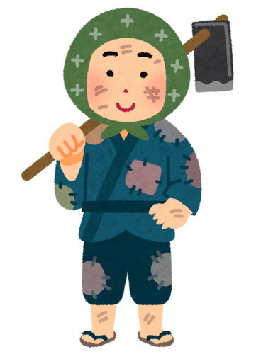
・清水に議員棲まわす
水が清らかすぎると、隠れる場所もえさもないこと。悪い議員が金目当てに悪事をはたらくと、隠れる所さえもなくされてしまうことから。
・正義は必勝と弱気を助け強気をくじく
矛盾していることのたとえ。正義はかならず悪者をこらしめられるということは、正義は強く悪者は弱いということであり、悪者を助け正義をくじく、といったまちがった結論が導かれることから。
・習わぬ経を読めという
習ってもいないお経など読めないように、知らないことはいくらやれといわれてもできないはずなのに、ろくに社員教育もせず即戦力と称して社員に労働を強いることのたとえ。
・労働者の節句働き
ふだんから働き続けているものが、仕事をやすんで祝う節句の日も働かされることのたとえ。休日出勤のこと。
・チボリを見てから死ね
チボリ公園はデンマークのコペンハーゲンにある公園。かつてのナポリは、ごみや有害物で汚染されゆくところではない、それよりもチボリの方がよいというたとえ。
・金を貸していえを売る
好意でしてやったことのために害をこうむる事のたとえ。金をいちど貸すとあじをしめ、何度も借りに来るようになり、ローン途中の自分の家をてばなすはめになる意から。
・大阪の考えときます、東京の考えときます
同じ言葉でも土地によって意味が変わるように、風俗とか習慣とかは土地によって異なるということ。大阪で「考えときます」は断わりの意味だが東京の「考えときます」は前向きな姿勢をしめすことから。
・八転び七起き
人の一生のこと。人は生まれたときは横になっていて、最期も横になっている。その間に何度も寝起きしていても、横になった回数のほうが一回多いことから。
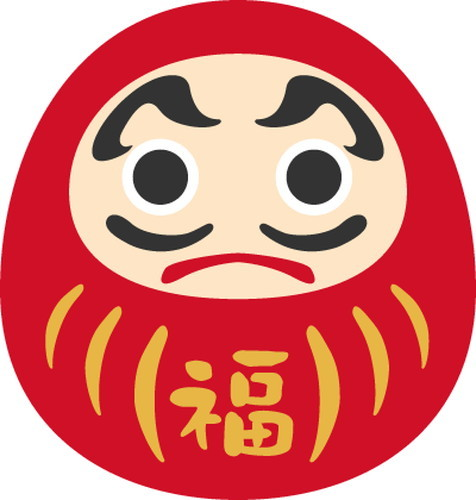
・夏は日陰を行け、冬は日向を行け
夏にあえて暑い日向を行ったり、冬にはあえて寒い日陰を行くようなことを意地はってすると、夏には熱中症、冬には脳梗塞や心筋梗塞になるということの戒め。
・四季うたうものは四季泣く
働くべき時に、額に汗して働いても賃金は上がらない、年金受給額は少なくなるで、どちらにしてもこまるたとえ。
・口動く者、手動かず
やたらとしゃべくりまくり理屈をこねる者は、とかく口先だけで、実利をもたらす仕事の出来ないことのたとえ。
・情けは人の為ならず
corporate social responsibility、略称： ＣＳＲのこと。どんな場合でも人には親切にしておいたほうがよいということ。
・流れに水差す
仕事がつぎつぎとうまく運んでいる人に嫉妬し、仕事がうまくいかないよう働きかけるたとえ。
・長い物には巻かれよか？
むかしは、権力や勢力のあるものには反抗せず、おとなしく相手の言いなりになっておくほうが、無難で得策だったが、今は使い捨てられるたとえ。
・ない袖は振れぬ
実際に持っていないものはいくら出したくても出すわけにはいかず、どうしようもないことから。タンクトップのように袖のない着物では振りたくても振れない意から。
・大学生の背比べ
どれもこれもたいした差がなく、特にめだつようなもののないこと。大学生に容姿の良い悪いかの差はあっても、かれらの能力は似たり寄ったりである事から。
・鳥なき会社の蝙蝠
すぐれた人がいない会社で、くだらない社員が大きな顔をしていばっているたとえ。
・人は千里から行って千里に帰る
家族を思う親の愛情の深いことのたとえ。北千里（大阪）に住む人は遠方まではたらきにゆき、我が子のため、北千里への道をかえってくることから。
・千里の道も飛行機で
便利なものはなんでも使うたとえ。類： 立っている者は親でも使え。
・立つ鳥跡を濁さず
悪事をはたらいた跡始末は、ばれないようきちんとせよというたとえ。マスコミの執拗な調査や内部告発があるから。
・叩くと、さらば開かない
ただじっと待っているのではなく、自分から適切に行動すれば、成功への道は開けてくるものだが、度を過ぎると失敗すること。インターフォンがあるのにドアを叩いたりすると、ＤＶの夫がおしかけてきたと勘違いし、戸を開くことはないことから。
・蛸は身を食う
どうしようもなくなって手元の資金や財産を食い減らすたとえ。元府知事の山田勇氏こと漫才師は、タコの物まねで財を成したが、後に大阪府知事に再出馬の際、選挙カーでアルバイトの女性へセクハラ行為におよび、人生をだいなしにしたことから。
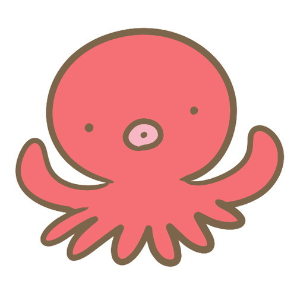
・大地震の前の小地震
おおきな地震がおきるばあいには、その前に小さな地震が頻発する。だから、ささいなことにも油断するなということ。
・大根を正宗で折る
才能の無い人物につまらない仕事をさせる例え。「正宗」は、鎌倉時代の名高い刀工、岡崎正宗が鍛えた刀剣。しかし、手入れもせずほうっておくと切れ味が悪くなり大根をきるほかに使いようがなくなることから。
・大器晩成も遅きに失す
大人物はゆっくりと大成するが、大成したころには老いていて好きなこともできなくなることから。
・曾参 、人を殺す
たとえしてなくとも、お前がしたと何度も執拗にいわれると、ついには自分がしたような気になるというたとえ。冤罪の原因ともいわれる。曾参 は孔子の門人のひとり。
・千万人と雖 も我往かん
正しいと信じたら、相手が千万人いようと恐るるに足らず、堂々と立ち向かって行くこと。類： 無鉄砲。死に損。
・栴檀 は二葉より豊か
大成する人物は、幼いころから豊かな環境にあり、おのずと大成するたとえ。「栴檀 」は白檀の異称。
・千丈の堤もろう蟻の穴を以て潰ゆ
ほんのわずかな油断や不注意から、おおきな失敗や損害が生じるたとえ。長いトンネルのつり天井のつり金具を、打検せず面倒なので目視ですまし崩落事故が起きたことや、地下空洞に這わした、大容量の電線ケーブルを目視ですましたため、漏電をみのがし大規模な停電をひきおこしたことへのいましめ。
・リーダー多くして会社傾く
指揮する人が何人もいるために統率がとれず、事がうまく運ばなかったり、とんでもない人件費がかかり、ついには倒産することのたとえ。
・一寸のちんこにも五分の魂
どんなに小さいちんこにも、それ相当の意地がある。だからどんなちんこでも決してあなどるなということ。
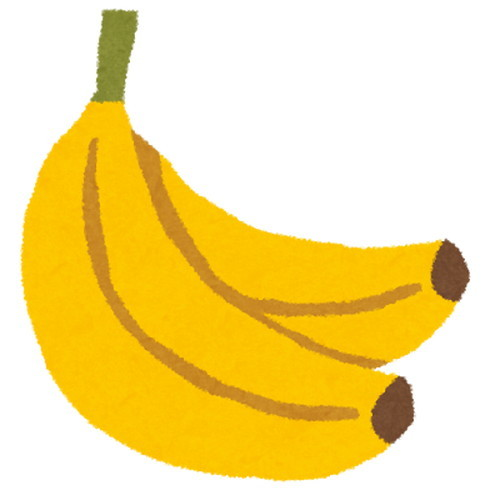
・晴天一日
心にやましいことがまったくないので、疑いがはれて、無罪であることが明らかになるも、ぬか喜びであり最高裁判所で逆転有罪。良いことは長く続かないということ。
・十うんこ集まれどもうんこ
あたまの悪いものがいくら集まっても良い知恵はでようもなく、何のためにもならないこと。反語： 三人寄れば文殊の知恵。
・全ての道はローマに通じていた
目的に到達するための手段はいろいろあるが、古い手段より最新の方法をもってする方が目的に達しやすいこと。
・スイーツも甘いも噛分ける
経験が豊かで、人情の機微につうじ、世界中のスイーツをしりつくしていること。
・辛抱しても木に金はならず
辛抱強くこつこつと励んでも、頭の良いものにこき使われるだけで結局財産もたまらないことから。
・人面心獣
一見、人間の顔は獣よりやさしい顔をしているが、心の中は獣より冷酷で、恩義・人情・恥を知らないことから。
・人事を尽くして天命を待つ
やれることはすべてやりつくしたのだが、天の命令なぞ聞いたことが無いので、後は野となれ山となれの心境をいうことば。
・論文を作るより薬を造れ
会社の経営者は文系の人が多く、論文を読んでも理解できないため、研究者にだまされていると思い込み、実利的な仕事をせよと本音をだすたとえ。
・初心、忘れても良い
状況の変化が目まぐるしい時代に、それを始めたときの気持ちのままでいると世間から立ち遅れることから。類： 臨機応変。
・小便を捨てて大便に就く
あまり重要でない方を捨て、重要なものにのみ力をそそぐこと。洋式便器の普及と温水便座の発明で、大便用便器ですべてすむことから。
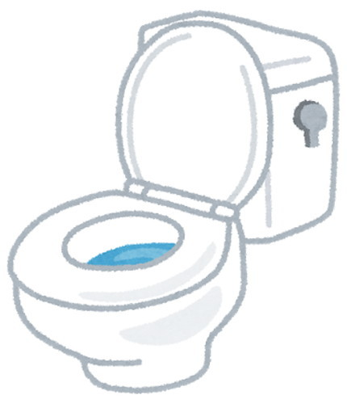
・先生よ、大志を抱け
やる気のない先生たちよ、おおきな志をもって世に役立てという、先生たちに言う励ましのことば。Teachers be ambitious.から。
・正直は一生の損
正直者は人から疑われ、その疑いによって不幸になることから。類： 嘘も方便。
・純真無し
邪心など全くなく、心が清らかな人はいないことのたとえ。
・出処進進
その地位・職務にとどまり続けること。天下り族のたとえ。
・歴史の人物、見たことない
歴史上の人物の生きていたころはこうだった、となにかというと引き合いに出して、今の若者に小言をいう。だがだれも歴史上の人物を実際には見ていない。だからこそそんな口が利けるわけで、あてにならないということ。
・ドヤ顔、知恵の行き止まり
人間、ドヤ顔ばかりするようになったら進歩はもう望めないということ。三遊亭好楽氏のたとえ。
・子の為に美田を買わず金残す
子孫のためを考え、価値の無い田なぞ買わず有事の金をのこすこと。このようにして、金持ちは代々金持ちでいられるたとえ。
・マンションの子落とし
我が子にわざと苦労させて厳しく鍛えすぎると、取り返しのつかないことが起きることがある事のたとえ。
・歩行錯誤
散歩に出かけるといったものの帰り道をわすれ、帰れなくなった人のたとえ。
・砂上のマンション
基礎がしっかりしていないためにたやすく傾いてしまうものや、現実不可能な計画のたとえ。杭打ちに手抜きのあるマンションは、すぐに傾いてしまうことから。
・魚は自分で焼くべし、石は盗人に焼かせよ
何をやるにしろ、人には適不適があるから、それにふさわしい人を選ぶべきだというたとえ。魚を自分で焼くと取られる心配がなく、石は取られても大事に至らないことから。
・子供の喧嘩は親が出よ
自分の子がいじめにあっているときは親が口出しをしないと、誰も助けてくれないので、自分の子を守るのは親しかいないということ。
ネタがとうとう尽きてしまいました。おわり。
「そんな小噺おもろないわい」というお叱りのことばもなく
最後まで読んでいただいた方々に深謝いたします。
平成二九年八月吉日 著者敬白
（著者紹介）
瀬戸浩二（せと こうじ）
昭和５４年３月 大阪市立大学大学院前期博士課程修了
平成３年６月 工学博士（大阪市立大学）
著書：
有機金属化合物を用いた液晶の合成とその性質に関する研究（博士論文）
人はなぜ老いるのか---老化の物理学---（幻冬舎）
◆タイトル
２１世紀のことわざ
◆発行日
平成二九年一〇月一七日
◆著者
瀬戸 浩二
◆発行所
パブフル
本作品の全て、または一部を、著作権者に無断で複製・転載・配信・送信、或いは内容を無断で改変する等の行為は、著作権法によって禁じられています。